ggfunction extends ggplot2 with geoms and stats for plotting mathematical functions and probability distributions directly from function objects. Supply a function and a domain; ggfunction handles evaluation, rendering, and shading.
Overview
The package is organized around two families of geoms:
| Family | Geom | Maps | Description |
|---|---|---|---|
| Dimensional | geom_function_1d_1d() |
Scalar functions with optional interval shading | |
geom_function_1d_2d() |
Parametric curves | ||
geom_function_2d_1d() |
Scalar fields (raster, contour, filled contour) | ||
geom_function_2d_2d() |
Vector field streamlines | ||
| Probability | geom_pdf() |
Probability density function | |
geom_pmf() |
Probability mass function (lollipop) | ||
geom_cdf() |
Cumulative distribution function | ||
geom_cdf_discrete() |
Discrete CDF (step function) | ||
geom_survival() |
Survival function | ||
geom_survival_discrete() |
Discrete survival function (step function) | ||
geom_qf() |
Quantile function | ||
geom_qf_discrete() |
Discrete quantile function (step function) | ||
geom_hf() |
Hazard function | ||
| Data | geom_ecdf() |
Empirical CDF with KS confidence ribbon | |
geom_eqf() |
Empirical quantile function with confidence ribbon | ||
geom_epmf() |
Empirical PMF (lollipop) |
Dimensional Taxonomy
Scalar functions: geom_function_1d_1d()
geom_function_1d_1d() evaluates a function at n equally-spaced points over xlim and draws it as a curve, extending ggplot2::stat_function() with built-in region shading. The following example plots the sine function over one full period.
library("ggfunction")
ggplot() +
geom_function_1d_1d(fun = sin, xlim = c(0, 2*pi))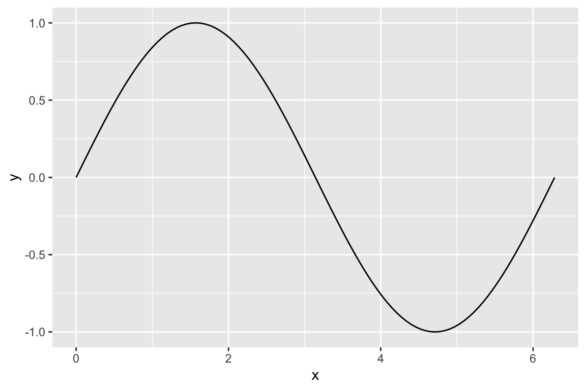
Shading intervals. The shade_from and shade_to parameters fill the region between the curve and the -axis over a specified interval. Here we shade the standard normal density between and , corresponding to approximately 68% of the total area.
ggplot() +
geom_function_1d_1d(fun = sin, xlim = c(-3, 3), shade_from = -1, shade_to = 1)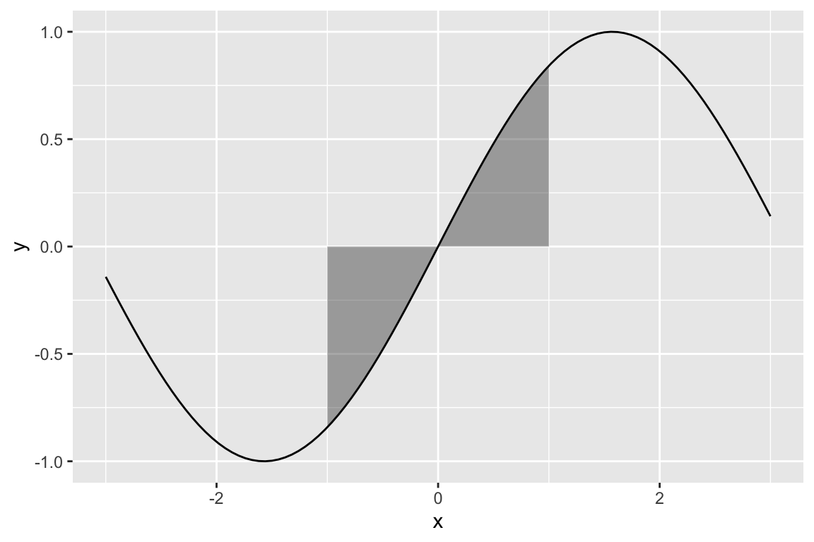
Parametric curves: geom_function_1d_2d()
geom_function_1d_2d() evaluates a parametric curve over the range tlim with step size dt, coloring the path by the time parameter by default. The following example traces the lemniscate of Bernoulli – a figure-eight curve along which the product of distances to the two foci is constant – .
lemniscate <- function(t) c(cos(t) / (1 + sin(t)^2), sin(t) * cos(t) / (1 + sin(t)^2))
ggplot() +
geom_function_1d_2d(fun = lemniscate, tlim = c(0, 1.9 * pi))
Arrowheads and tail points. Setting tail_point = TRUE and passing grid::arrow() to arrow marks the starting position of the curve with a point and the tail with an arrowhead, respectively, useful for showing an initial condition and direction of the curve.
ggplot() +
geom_function_1d_2d(
fun = lemniscate, tlim = c(0, 1.9 * pi), tail_point = TRUE,
arrow = grid::arrow(angle = 30, length = grid::unit(0.02, "npc"), type = "closed")
)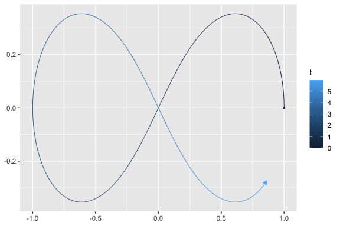
Parameterized families. Extra parameters for fun are passed via args. The following example traces a Lissajous figure, a closed curve that results when two sinusoids with a rational frequency ratio are combined.
lissajous <- function(t, a = 3, b = 2, delta = pi/2) {
c(sin(a * t + delta), sin(b * t))
}
ggplot() +
geom_function_1d_2d(
fun = lissajous, tlim = c(0, 1.9 * pi),
args = list(a = 3, b = 2, delta = pi/2)
)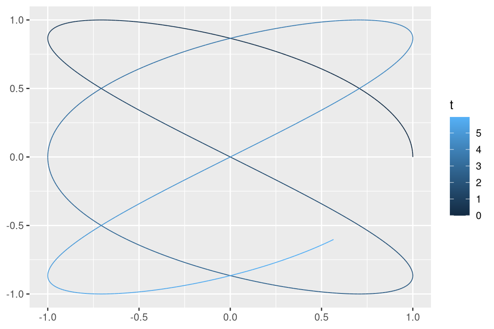
Scalar fields: geom_function_2d_1d()
geom_function_2d_1d() evaluates a scalar field on an grid over xlim ylim. The function must accept a numeric vector of length 2 and return a scalar; extracting components with x <- v[1]; y <- v[2] is the recommended pattern. The example below shows a Gaussian bump rendered as a raster heatmap (the default type).
f <- function(v) {
x <- v[1]; y <- v[2]
sin(2*pi*x) + sin(2*pi*y)
}
ggplot() +
geom_function_2d_1d(fun = f, xlim = c(-1, 1), ylim = c(-1, 1))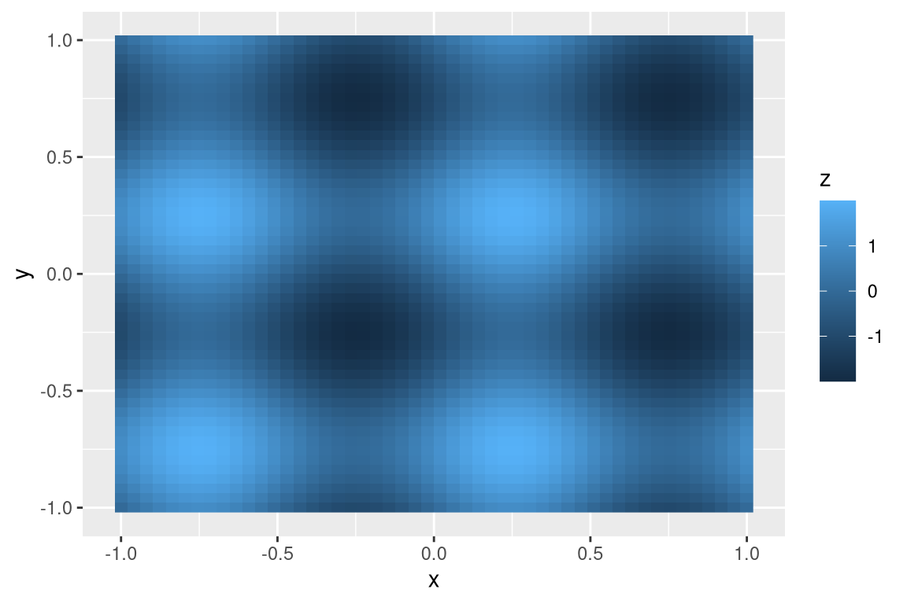
Contour modes. The type argument switches among three visual encodings of the same field. "contour" draws iso-level curves colored by level value; "contour_filled" draws filled regions between levels; both respond to bins, binwidth, and breaks.
ggplot() +
geom_function_2d_1d(fun = f, xlim = c(-1, 1), ylim = c(-1, 1), type = "contour")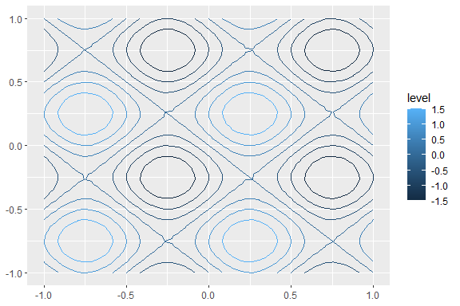
ggplot() +
geom_function_2d_1d(fun = f, xlim = c(-1, 1), ylim = c(-1, 1), type = "contour_filled")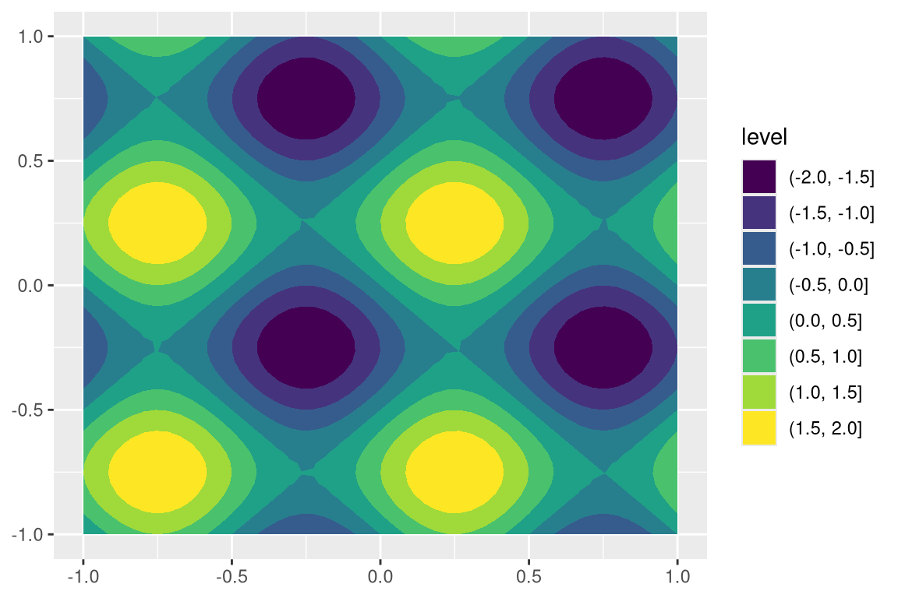
Vector fields: geom_function_2d_2d()
geom_function_2d_2d() visualizes a vector field via ggvfields. The function should accept a length-2 vector and return a length-2 vector. By default (type = "vector") it draws short arrows at each grid point colored by field magnitude; type = "stream" switches to integral-curve streamlines. The following example shows the rotation field .
f <- function(u) {
x <- u[1]; y <- u[2]
c(-y, x)
}
ggplot() +
geom_function_2d_2d(fun = f, xlim = c(-1, 1), ylim = c(-1, 1))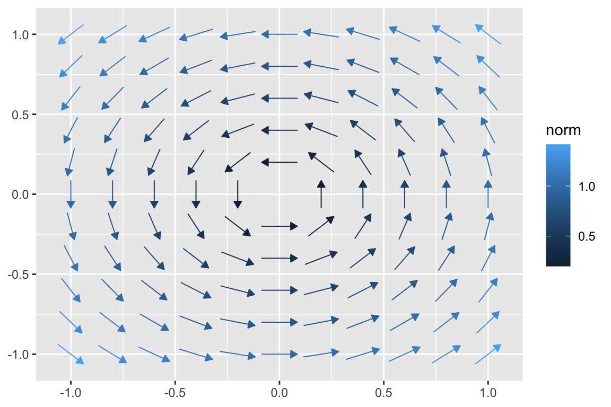
Stream field. Setting type = "stream" renders the field as integral curves computed by numerical integration, colored by average speed along each curve.
ggplot() +
geom_function_2d_2d(fun = f, xlim = c(-1, 1), ylim = c(-1, 1), type = "stream")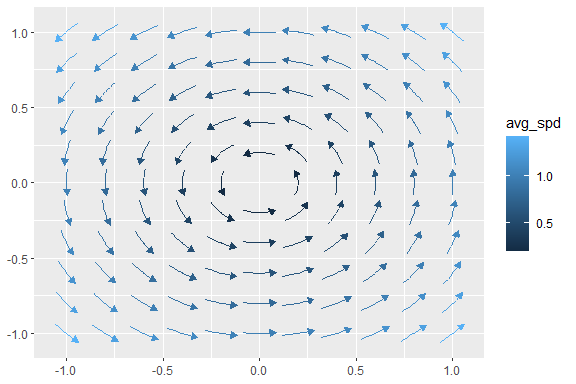
Probability Distributions
The probability family provides a geom for each of the standard functions associated with a distribution. Each accepts a plain R function (e.g. dnorm, pnorm) and xlim; distribution parameters are passed via args.
PDF: geom_pdf()
geom_pdf() draws a probability density function as a filled area. It validates that the supplied function integrates to 1 over xlim, warning via cli if it does not. The basic call draws the full density with no shading.
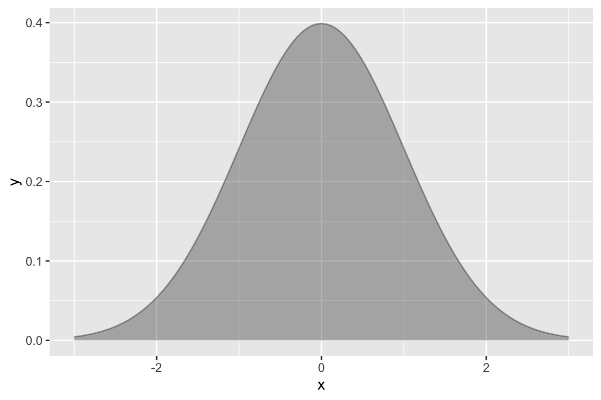
Single threshold. The p parameter shades from the left boundary up to the -quantile (lower.tail = TRUE, the default). Setting lower.tail = FALSE shades the upper tail instead. Here we shade the lower 97.5%.

Two-sided interval. p_lower and p_upper together shade the central region between two quantiles—the natural picture for a confidence interval. The following example shades the central 95%.
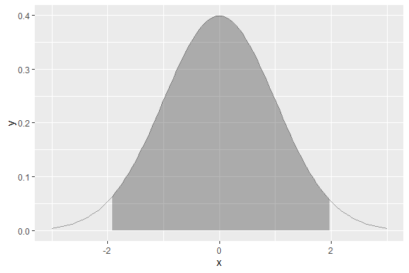
Tail shading. Setting shade_outside = TRUE inverts the two-sided region, shading both tails. This is the rejection region of a two-sided hypothesis test at level .
ggplot() +
geom_pdf(
fun = dnorm, xlim = c(-3, 3),
p_lower = 0.025, p_upper = 0.975, shade_outside = TRUE
)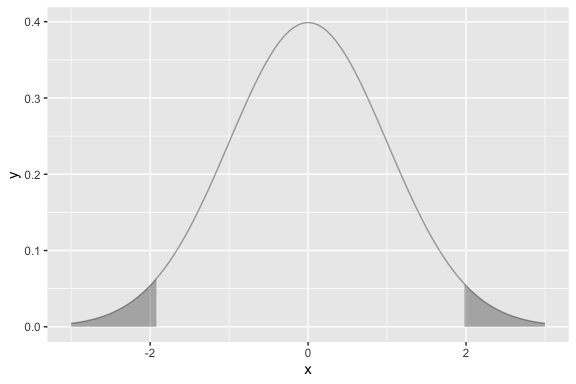
Highest density region. shade_hdr shades the smallest region of the domain containing the specified probability mass—the highest density region (HDR). For multimodal densities this region can be disconnected. The following example uses an asymmetric mixture of two normals; the 80% HDR captures both modes as two disjoint intervals, with more area allocated to the taller, narrower component.
f_mix <- function(x) 0.6 * dnorm(x, mean = -2, sd = 0.6) + 0.4 * dnorm(x, mean = 2, sd = 1.2)
ggplot() +
geom_pdf(fun = f_mix, xlim = c(-5, 6), shade_hdr = 0.8)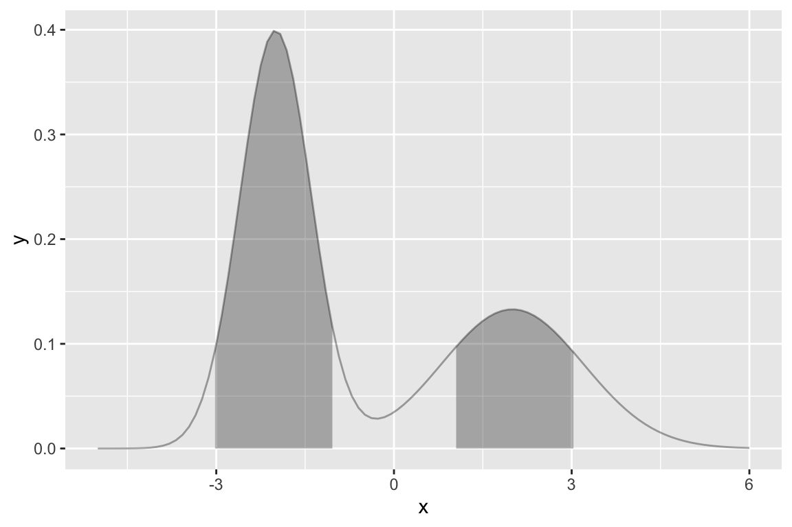
PMF: geom_pmf()
geom_pmf() evaluates a probability mass function at each integer in xlim and renders the result as a lollipop chart—vertical segments capped with points. Distribution parameters are supplied via args. The following example plots a distribution.
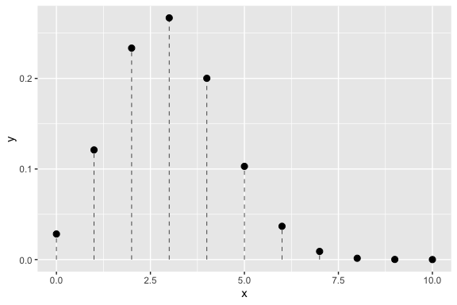
Single threshold. The p parameter shades lollipops up to the -quantile (grey dashed sticks mark the unshaded region). Here we shade the lower 80% of a distribution.
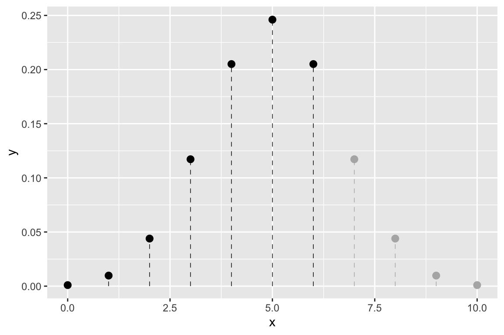
Highest density region. shade_hdr shades the smallest set of support points whose total probability mass meets or exceeds the target coverage. For a symmetric unimodal PMF this is a central interval; for a skewed distribution it is asymmetric. Here the 70% HDR of a distribution is highlighted.
ggplot() +
geom_pmf(fun = dbinom, xlim = c(0, 10), args = list(size = 10, prob = 0.3),
shade_hdr = .70)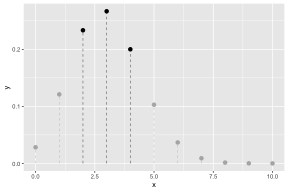
ggplot() +
geom_pmf(fun = dbinom, xlim = c(0, 10), args = list(size = 10, prob = 0.3),
shade_hdr = .80)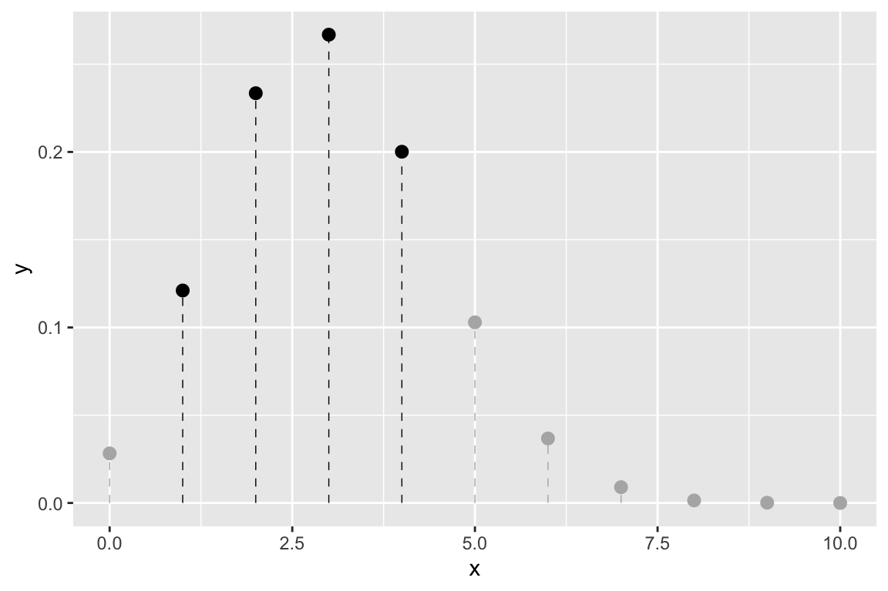
Explicit support. When the support is not a sequence of consecutive integers, pass the exact support points via support. Here we plot the distribution of the sample mean of 10 iid draws. The support is and the PMF is binomial: .
CDF: geom_cdf() and geom_cdf_discrete()
The cumulative distribution function is available for both continuous and discrete distributions.
Continuous (geom_cdf()). Draws the CDF as a line. Here we plot the standard normal CDF.
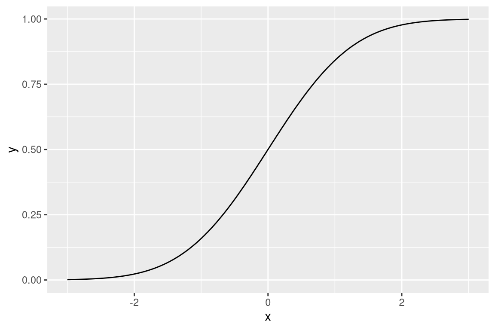
Discrete (geom_cdf_discrete()). Takes a PMF, accumulates it into the right-continuous step-function CDF, and renders it with horizontal segments, dashed vertical jumps, open circles at the lower limit of each jump, and closed circles at the achieved value. The following example plots the CDF.
ggplot() +
geom_cdf_discrete(fun = dbinom, xlim = c(0, 10), args = list(size = 10, prob = 0.5))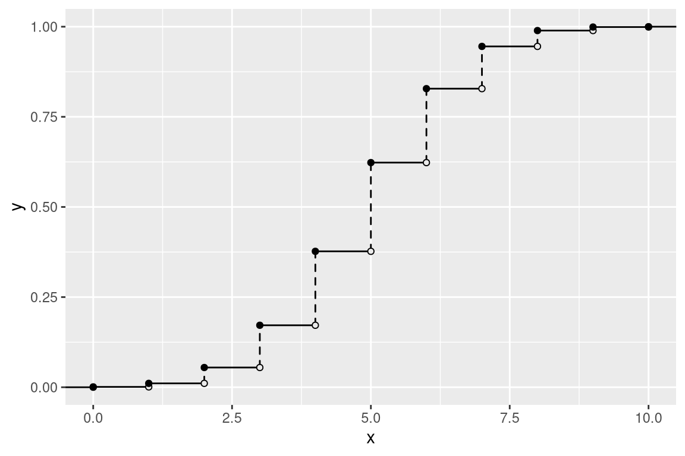
Parameterized families. Here we plot a discrete CDF.
ggplot() +
geom_cdf_discrete(fun = dpois, xlim = c(0, 15), args = list(lambda = 5))
Hiding points and lines. show_points = FALSE and show_vert = FALSE remove the endpoint circles and vertical jump segments, leaving only the horizontal staircase.
ggplot() +
geom_cdf_discrete(fun = dbinom, xlim = c(0, 10), args = list(size = 10, prob = 0.5),
show_points = FALSE, show_vert = FALSE)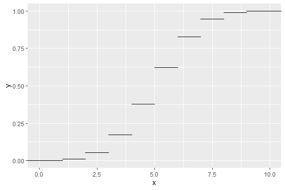
Explicit support. Pass non-integer support points directly via support. Here we plot the CDF of the sample mean of 10 iid draws.
f_mean <- function(x, prob) dbinom(round(x * 10), size = 10, prob = prob)
ggplot() +
geom_cdf_discrete(fun = f_mean, support = seq(0, 1, by = 0.1), args = list(prob = 0.3))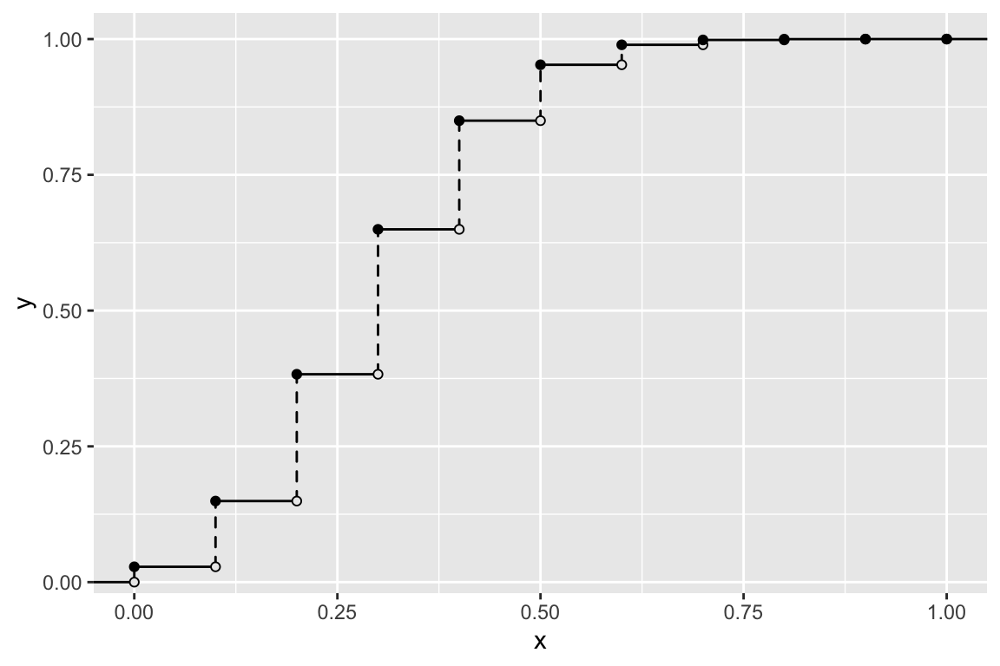
Survival function: geom_survival() and geom_survival_discrete()
The survival function gives the probability of surviving past .
Continuous (geom_survival()). Accepts a CDF via fun. The following example shows the survival function of an distribution, which decays as .
ggplot() +
geom_survival(fun = pexp, xlim = c(0, 10), args = list(rate = 0.5))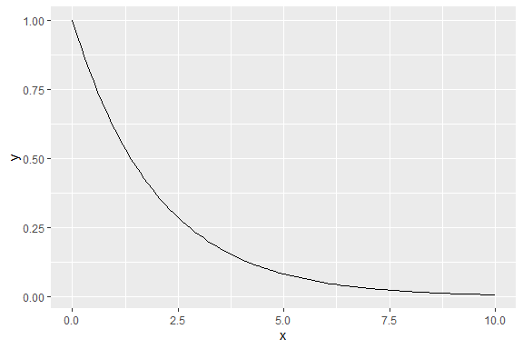
Discrete (geom_survival_discrete()). Takes a PMF and renders as a right-continuous step function using the same visual conventions as geom_cdf_discrete(). The following example plots the survival function.
ggplot() +
geom_survival_discrete(fun = dbinom, xlim = c(0, 10), args = list(size = 10, prob = 0.5))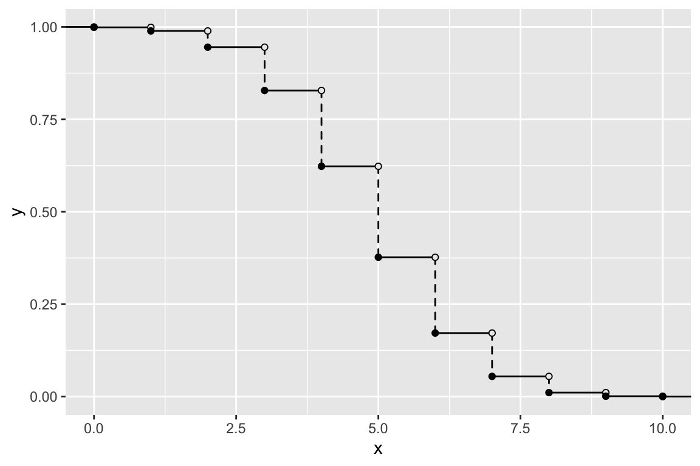
Hiding points. Setting show_points = FALSE removes the endpoint circles.
ggplot() +
geom_survival_discrete(fun = dbinom, xlim = c(0, 10), args = list(size = 10, prob = 0.5),
show_points = FALSE)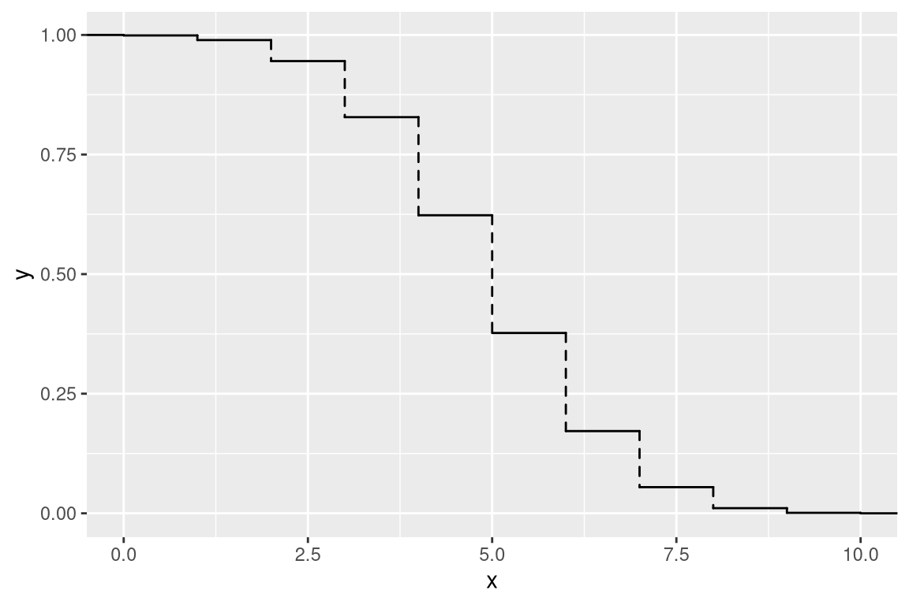
Explicit support. The survival function of the sample mean of 10 iid draws.
f_mean <- function(x, prob) dbinom(round(x * 10), size = 10, prob = prob)
ggplot() +
geom_survival_discrete(fun = f_mean, support = seq(0, 1, by = 0.1), args = list(prob = 0.3))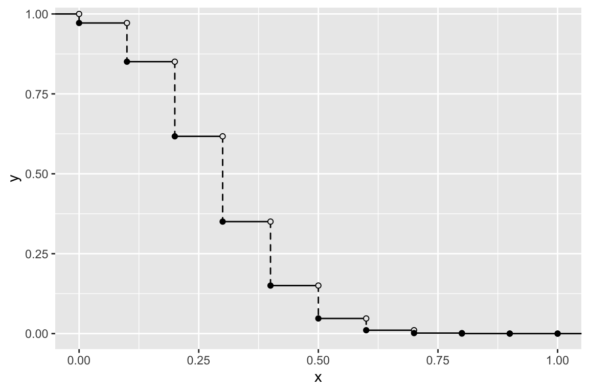
Quantile function: geom_qf() and geom_qf_discrete()
The quantile function inverts the CDF.
Continuous (geom_qf()). Evaluates a quantile function over the unit interval and draws it as a curve. The following example plots the standard normal quantile function.
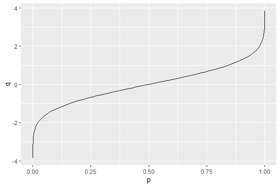
Discrete (geom_qf_discrete()). Takes a PMF and renders the quantile function as a left-continuous step function on the unit interval, with closed circles at the bottom of each jump (the value is achieved) and open circles at the top (the next value is not yet reached). The following example plots the quantile function.
ggplot() +
geom_qf_discrete(fun = dbinom, xlim = c(0, 10), args = list(size = 10, prob = 0.5))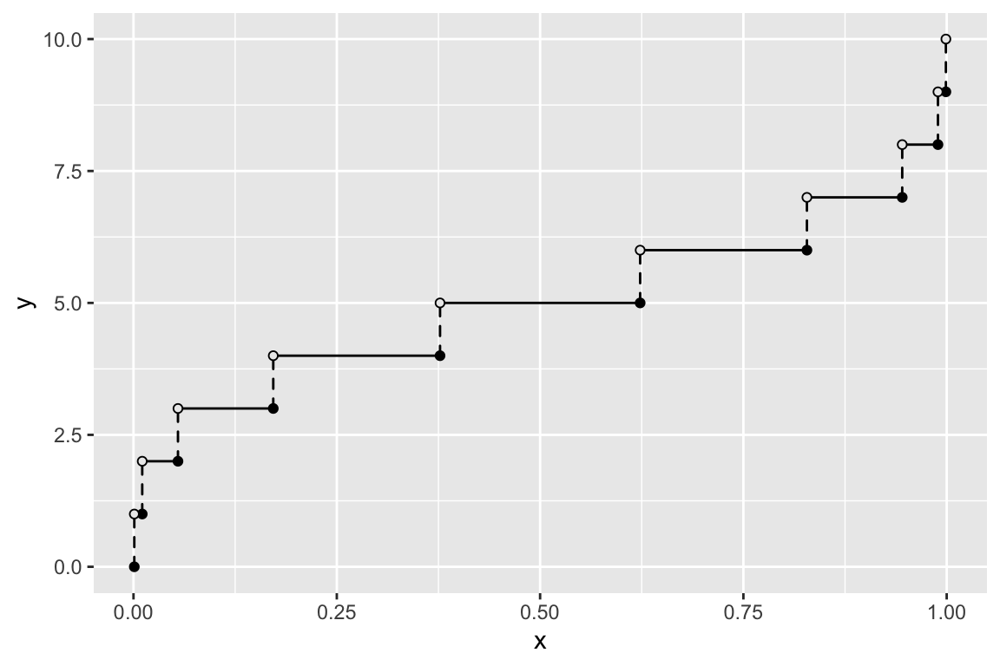
Parameterized families. Here we plot a discrete quantile function.
ggplot() +
geom_qf_discrete(fun = dpois, xlim = c(0, 15), args = list(lambda = 5))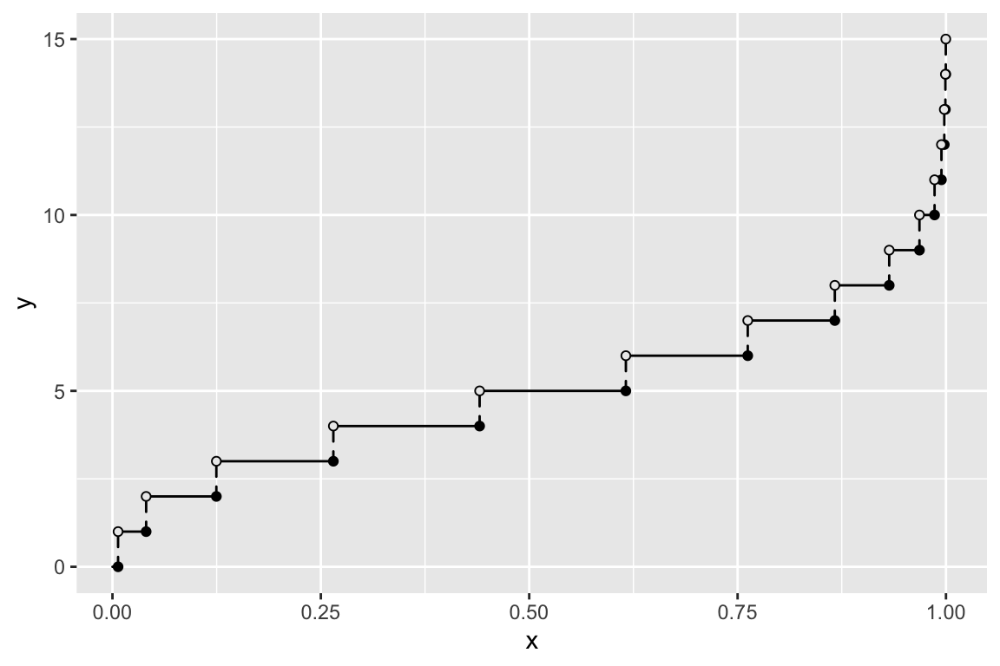
Hiding points. Setting show_points = FALSE removes the endpoint circles, leaving only the horizontal and vertical lines.
ggplot() +
geom_qf_discrete(fun = dbinom, xlim = c(0, 10), args = list(size = 10, prob = 0.5),
show_points = FALSE)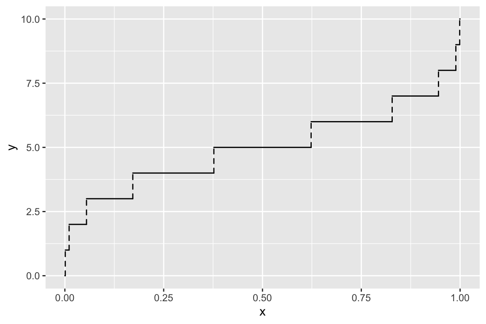
Hiding vertical lines. Setting show_vert = FALSE removes the dashed vertical jump segments, leaving only the horizontal steps and endpoint circles.
ggplot() +
geom_qf_discrete(fun = dbinom, xlim = c(0, 10), args = list(size = 10, prob = 0.5),
show_vert = FALSE)Explicit support. The quantile function of the sample mean of 10 iid draws.
f_mean <- function(x, prob) dbinom(round(x * 10), size = 10, prob = prob)
ggplot() +
geom_qf_discrete(fun = f_mean, support = seq(0, 1, by = 0.1), args = list(prob = 0.3))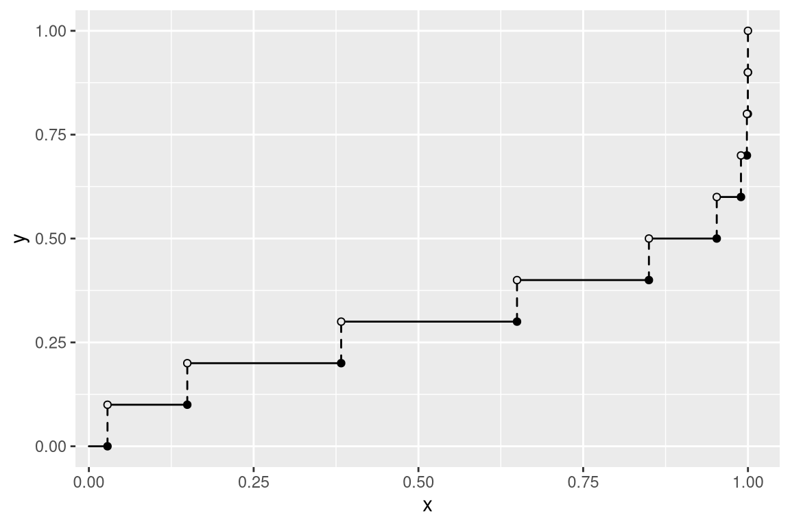
Hazard function: geom_hf()
geom_hf() plots the hazard function , the instantaneous rate of failure at time conditional on survival to that point. It requires both a PDF (pdf_fun) and a CDF (cdf_fun). Shared parameters go in args; use pdf_args and cdf_args for overrides when the two functions have different parameterizations. The exponential distribution’s constant hazard confirms the memoryless property.
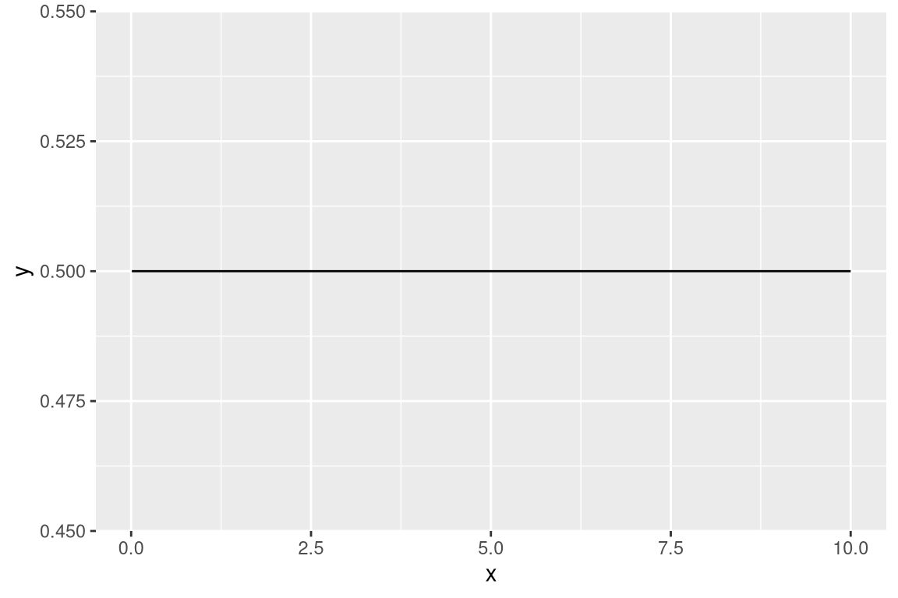
Data Functions
The data family works with an observed numeric sample rather than a function object. Supply a vector of data via aes(x = ...) and the geom handles the rest. All three geoms use the same visual language as their theoretical counterparts in the Probability section.
Empirical CDF: geom_ecdf()
geom_ecdf() plots the empirical cumulative distribution function of a sample as a right-continuous step function, using the same visual conventions as geom_cdf_discrete(). A 95% simultaneous Kolmogorov-Smirnov confidence ribbon is drawn by default; set conf_int = FALSE to suppress it.

Multiple groups. Map colour to a grouping variable to overlay ECDFs for several groups. Each group gets its own confidence ribbon, computed from that group’s sample size.
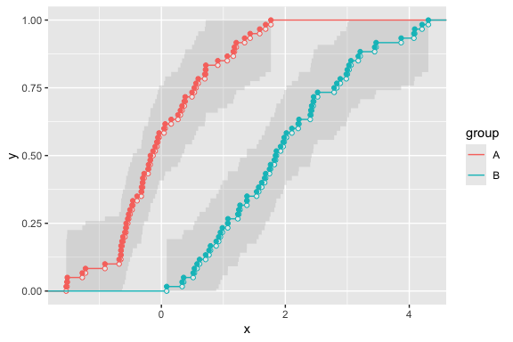
Controlling the band. Use level to change the confidence level and conf_alpha to adjust ribbon transparency.
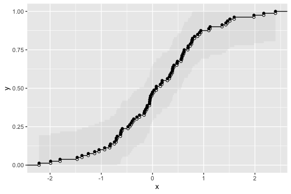
Empirical quantile function: geom_eqf()
geom_eqf() plots the empirical quantile function as a left-continuous step function on , using the same visual conventions as geom_qf_discrete(). The confidence ribbon inverts the KS ECDF band: at probability the band spans .
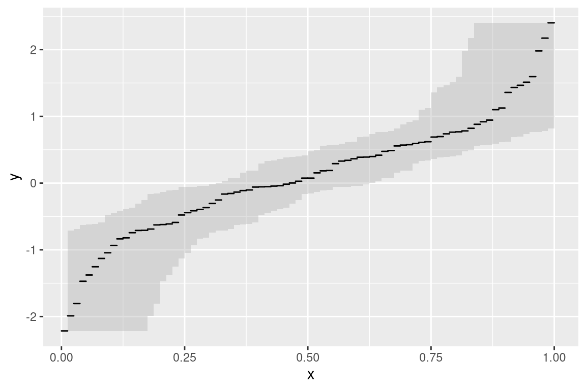
Multiple groups.
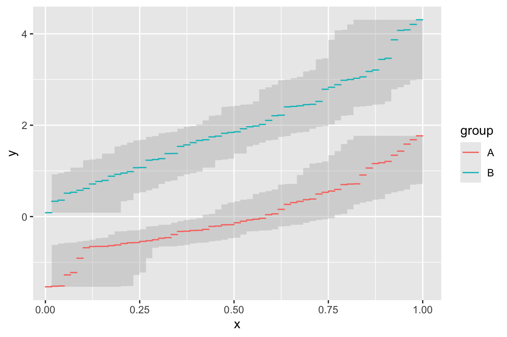
Informal normality test. Because the KS confidence band covers the true quantile function with probability regardless of the null, overlaying a parametric turns the plot into a visual goodness-of-fit test: if lies entirely within the band the data are consistent with the hypothesized model; if it exits the band there is evidence against it. The comparison below fits a normal distribution by maximum likelihood (sample mean and SD) to two samples of size —one actually normal, one exponential—and overlays the fitted as a smooth line.
set.seed(3)
df_gof <- data.frame(
x = c(rnorm(100), rexp(100) - 1),
sample = rep(c("Normal data", "Exponential data"), each = 100)
)
# Fitted normal QF for each sample
normal_qf <- function(p, x) qnorm(p, mean = mean(x), sd = sd(x))
p_norm <- ggplot(subset(df_gof, sample == "Normal data"), aes(x = x)) +
geom_eqf() +
geom_qf(fun = normal_qf, args = list(x = subset(df_gof, sample == "Normal data")$x),
colour = "red") +
ggtitle("Normal data")
p_exp <- ggplot(subset(df_gof, sample == "Exponential data"), aes(x = x)) +
geom_eqf() +
geom_qf(fun = normal_qf, args = list(x = subset(df_gof, sample == "Exponential data")$x),
colour = "red") +
ggtitle("Exponential data")
library(patchwork)
p_norm + p_exp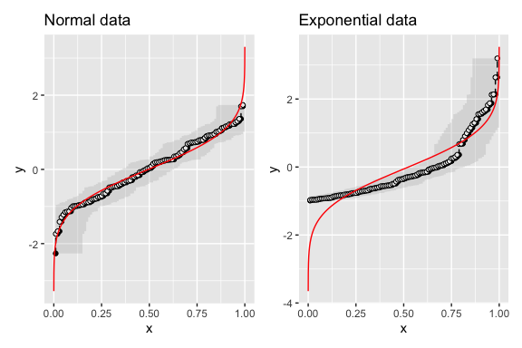
The fitted normal line threads through the center of the band for the normal sample; for the exponential sample it departs visibly at the tails, where the asymmetry of the exponential distribution is most pronounced. Note that estimating parameters from the data makes the band slightly conservative (analogous to the Lilliefors correction), so this is an informal rather than exact test.
Empirical PMF: geom_epmf()
geom_epmf() tabulates the empirical probability mass function—placing mass at each distinct observed value —and renders it as a lollipop chart using the same visual conventions as geom_pmf().
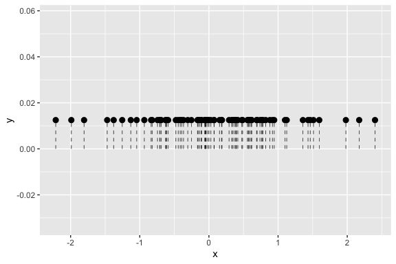
Multiple groups.
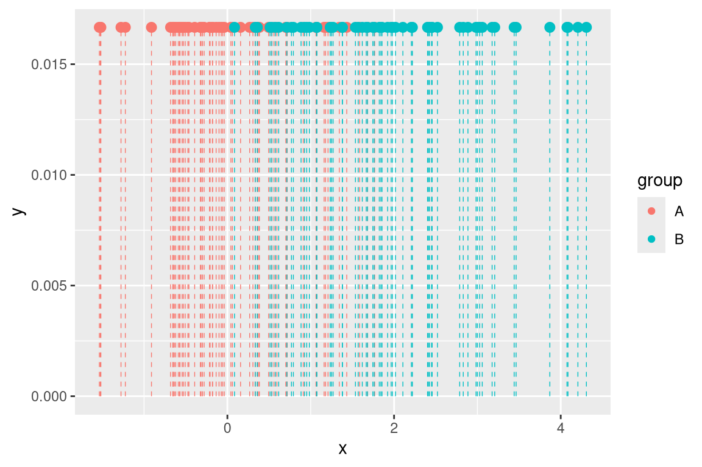
Getting help
- Browse the vignette for a guided walkthrough
- File bugs or feature requests at https://github.com/dusty-turner/ggfunction/issues